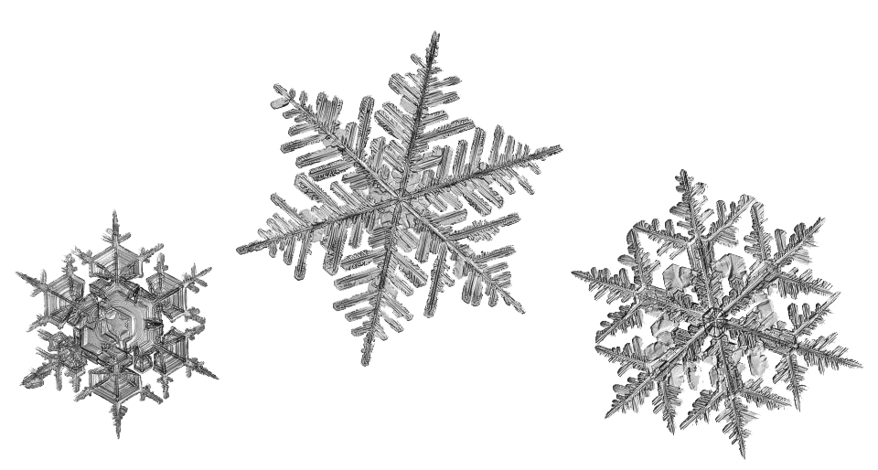

6/4/22: Lubov:
Connor Stankard,
Ava Chloe Blair Nicole
4/29/22:
The Paris Review
(Web)
Venice Biennale Dispatch
8/28/19:
Cabinet
Magazine:
"Dynamicland and the Whimsical Digital Object"
SHORT REVIEWS

5/20/22: Hannah Black and Juliana Huxtable,
Penumbra
https://www.theparisreview.org/blog/2022/05/20/on-penumbra/
4/15/22: Kati Kelli,
Girl Internet Show
https://www.theparisreview.org/blog/2022/04/15/on-girls-online/
3/3/22: Other Internet
https://www.theparisreview.org/blog/2022/03/03/the-reviews-review-vesna/
2/4/22: New York City Ballet / Christopher Wheeldon,
Danse à Grande Vitesse
https://www.theparisreview.org/blog/2022/02/04/the-reviews-review-out-of-time/
1/20/22: Hannah Regel,
Oliver Reed
https://www.theparisreview.org/blog/2022/01/20/the-reviews-review-back-to-the-essence/
1/7/22: Jaimy Gordon,
Circumspections from an Equestrian Statue
https://www.theparisreview.org/blog/2022/01/07/the-reviews-review-wives-and-daughters-love-and-light/
12/17/21: D.A Miller,
Jane Austen, or the Secret of Style
and Stanley Cavell,
Pursuits of Happiness
and Yukio Mishima,
Star
and Jane Unrue,
Life of a Star
https://www.theparisreview.org/blog/2021/12/17/our-staffs-favorite-books-of-2021/
10/21/21: Curtis Eggleston,
Hollow Nacelle
https://www.theparisreview.org/blog/2021/10/21/the-reviews-review-eternal-present/
10/14/21: The Consumer Aesthetics Research Institute
https://www.theparisreview.org/blog/2021/10/14/the-reviews-review-nocturne-vibes/
9/30/21: Jon Bois,
17776: The Future of Football
https://www.theparisreview.org/blog/2021/09/30/the-reviews-review-strangers-and-the-moon/
9/23/21: Jeffrow Skoblow,
In a Trance: On Paleo Art
and Lisa Yuskavage,
New Paintings
https://www.theparisreview.org/blog/2021/09/23/the-reviews-review-reproducing-bodies/
9/17/21: Liby Hays,
Geniacs
https://www.theparisreview.org/blog/2021/09/17/the-reviews-review-these-were-the-angels/